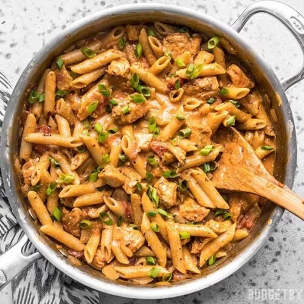

Cajun Chicken Pasta Date Night Dish (Serves 2)
Back to Homepage

Description
Cajun chicken pasta is an extremely savory dish with lots of southern influence.
It is a very hearty and creamy recipe that will have the entire family, or even just your one eyed cat, begging for more.
Spicy smoky, and extremely versatile, this is the dish you want when you want to impress your significant other.
You can put your own twist on this by substituting the chicken for your choice of protein, or your types of vegetables.
Overall, this is a great dish to have in your arsenal of recipes.
Ingredients
- Olive Oil
- (1/2) White Onion (Diced)
- (3 Cloves) Minced Garlic
- (To Taste) Cajun Seasoning
- (8) Finely Diced Sun Dried Tomatoes
- (2) Large Chicken Breasts
- (3/4 Cup) White Wine
- (2 Cups) Heavy Cream
- (1/3 Cup) Fresh Parmesan Cheese
- Choice of Pasta
- Salt
- Pepper
- Red Chili Flakes (Optional)
Steps
- Cut up and season chicken using cajun seasoning, salt, and pepper.
- Heat up pan, coat with some olive oil, and put the chicken in the pan.
- Once the chicken is seared, take out of the pan. Put it to the side and cover it.
- To the same pan, add your dice onions and cook until tender.
- Once your onions are tender add minced garlic and finely diced sun dried tomatoes. Let cook for 1-2 minutes. Add cajun seasoning while it is cooking.
- After this, you are going to de-glaze this with white wine. After cooking for a few minutes, and add heavy cream.
- Add freshly shredded parmesan cheese to the sauce. Cook down until thick using medium-low heat.
- Add chicken into sauce and mix everything together.
- Serve over preferred pasta.
- Garnish with Parmesan Cheese and Red Chili Flakes (Optional)